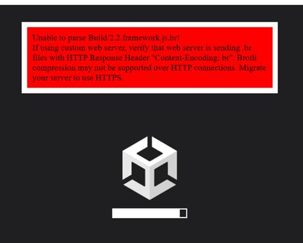
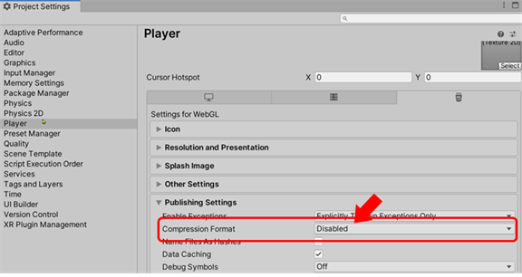

Web GL Build Configuration

Take a look at this discussion. Before building, click Player Settings … on the pop-up window, click on Player and under Publishing Settings look for Compression Format, set this to Disabled as indicated in the following:

This new setting solved the problem form me.